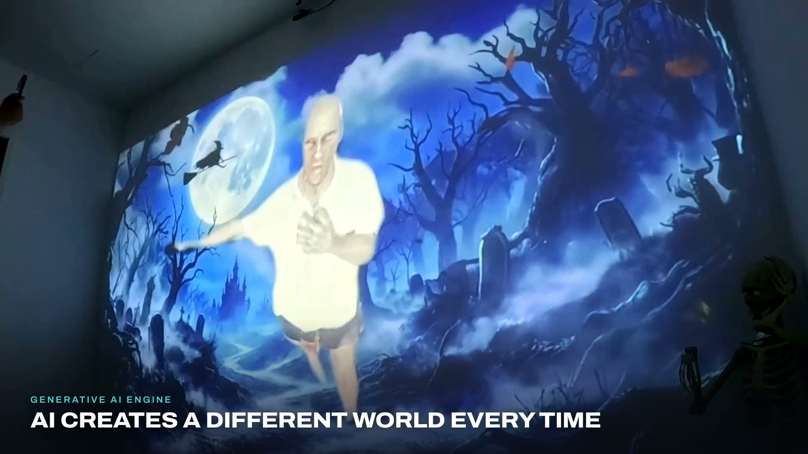
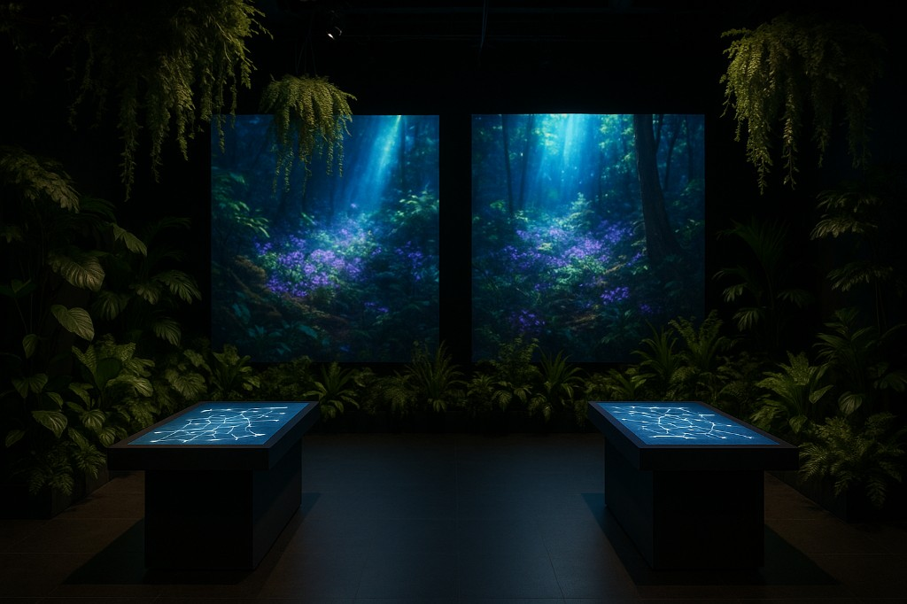

Sensor-driven rooms
Themed spaces where walls, screens and exhibits react to the people inside them — as in the Museo Descubre renovation.
ANDATA LAB designs and produces interactive installations where the public can affect image, sound, light or digital content — from sensor-driven rooms to real-time generative environments.
Immersive Experiences, Engineered.
We design and produce installations in which people are not spectators. Touch, presence, cameras and physical sensors can drive image, light and — when the brief asks for it — sound.
The work is site-specific. Interaction, content and systems are built for the room, then installed and tested there. Related surfaces include projection mapping and permanent hospitality environments.
Themed spaces where walls, screens and exhibits react to the people inside them — as in the Museo Descubre renovation.
Hands, surfaces and capacitive inputs that trigger graphics, colour and media in real time.
Motion tracking, Kinect and camera input so the body — not a button — can shape what appears.
TouchDesigner engines and GLSL that generate visuals live from sensor data, rather than looping a finished file.
Composited canvases routed to several screens at once — as in Biointerface’s three-screen environment.
When the brief requires it, sound can sit with the image — Museo Descubre’s sensor walls pair touch, sound and light.
What an installation responds to is chosen with the brief. Not every project uses every input. We do not use facial recognition on these systems.
Hands on walls, tables and sensors. Museo Descubre uses touch and hand sensors; Biointerface uses capacitive touch on living plants.
People walking into a room, standing at a wall, or moving through a mapped field can change what the system shows.
Motion tracking on the museum floor; Kinect and camera input inside Biointerface.
Arduino and capacitive hardware wired into the show-control machine — custom electronics, not a product line of our own.
Sensor and MIDI/OSC data mapped through TouchDesigner so operators and other systems can drive the same engine.
Biointerface wires living plants as capacitive instruments. That is a specific built example — not a claim that every brief uses biology.
We work with agencies, brands, producers, museums, galleries, festivals, exhibitions and public spaces when the brief needs people to affect the media. We do not claim every industry or every scale. Scope follows the space, the interaction and the calendar.
Spatial brand moments and partner productions. Museo Descubre was delivered with IPG Mediabrands and Nissan among the project partners.
Sensor-driven exhibits and rooms that teach through interaction — documented at Museo Descubre in Aguascalientes.
Interactive art systems with real-time generative visuals, as in Biointerface.
Temporary interactive environments when the interaction, equipment and install window can be defined in advance.
Rooms built for repeat use by visitors — tested with real audiences before they open, as on the Museo Descubre floor.
The service is what we sell. These cases are what we can show in public today.

An AI wall that reads the body in real time — body tracking, TouchDesigner and generative visuals. Visitors step in and become part of the image.
Read the El Umbral case study →
Creative direction, project management and interactive systems for the 2024 renovation — themed science zones, touch and hand sensors, motion tracking, sensor-driven walls and real-time graphics, installed and tested on the museum floor.
Read the Museo Descubre case study →
Living plants wired as capacitive inputs, Kinect and camera input, and a TouchDesigner engine with GLSL driving generative visuals across a three-screen canvas, routed over NDI / Spout.
Read the Biointerface case study →The steps are consistent. How deep each one goes depends on the space, the interaction, the existing equipment and the calendar. There is no universal timetable.
The space, audience, goal and what already exists on site — screens, projectors, sensors, power, geometry and light.
What people do, what the system returns, and how that serves the story of the room.
The interaction is developed and tested before it is installed at full scale — real-time studies, sensor behaviour and visual response.
Graphics, show control, sensors and playback engineered to run as one system — TouchDesigner, and Unity3D or Arduino when the brief needs them.
On-site assembly, mapping, wiring and calibration to the real geometry and lighting of the venue.
Systems are tested with real audiences where the project requires it, then handed over with a plan for how the room runs.
The stack is a means. We choose it so the public can change what they see, hear or touch — not to lead with software names.
Send what you have. Incomplete information is still useful — we can say what else would help us evaluate the space.
Tell us the space, the city, the calendar and the interaction you want. We can help define the system, the prototype and the install scope.
Start an Interactive Installation Project →Touch, presence and movement, cameras and motion tracking, physical sensors, and MIDI / OSC for real-time control. Biointerface also uses living plants as capacitive inputs. We do not use facial recognition on these systems.
Yes, when they fit the interaction. Biointerface was routed to LED screens over NDI / Spout. Whether existing equipment can be used is decided after we see the space, the signal paths and the brief — not in advance for every room.
Yes. Interaction, sensor behaviour and real-time visuals are developed and tested before on-site installation. How far the prototype goes is set with the project, not as a fixed package.
Yes, when the brief requires it. Museo Descubre’s sensor walls combine touch, sound and light. Biointerface maps MIDI / OSC into the same real-time engine as the visuals. Sound is designed with the picture, not added as an afterthought.
Type of space, city, approximate calendar, audience, objective, the interaction you want, any existing equipment, and photographs, plans or measurements if they exist. Send what you have — we can say what else would help.
Yes. Museo Descubre was delivered with agency, brand and public-sector partners. Roles and scope are agreed per project.